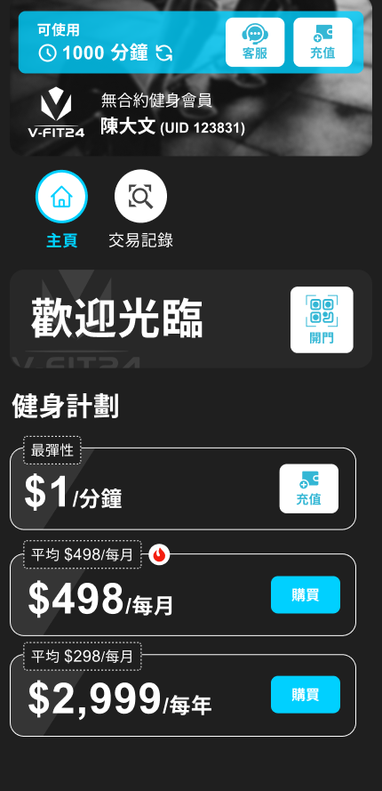
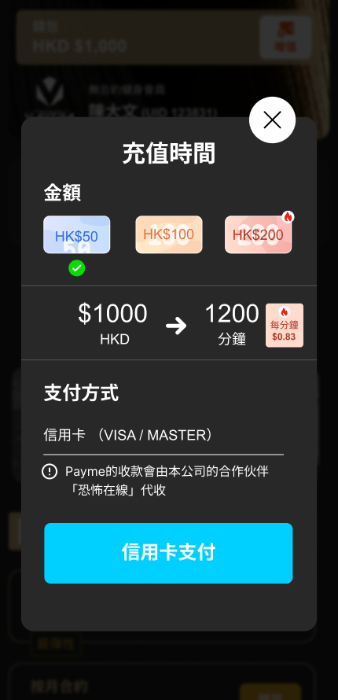
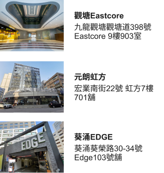

Designing fairness into a self-service gym.
The owner set a simple proposition: charge HK$1 per minute. As the UX/UI Designer and Product Manager, I turned that direction into the rules, priorities and recovery flows needed to run a 24-hour gym — across members, Customer Service Operations and management.
Explore the screen-flow libraryThe problem
HK$1-per-minute pricing sounds simple until the gym has no staff at the door. The product has to know when a member enters and leaves, cap longer sessions fairly, and recover when an OTP, network request or access record fails — without losing member trust or revenue.
How might we make a 24/7 self-service gym operationally viable by connecting access, minute-based billing and human recovery in one product ecosystem?
What I did
Product strategy — protect the operating loop
- Used stakeholder-led operational discovery with the owner, Customer Service Operations, management and the development team to turn the commercial proposition into product rules
- Co-defined the pricing guardrail with the owner: HK$1 per minute, capped at a HK$120 Day Pass after two hours
- Prioritised registration, wallet, access, live minute tracking, checkout and exception recovery for the 2025 MVP; deliberately deferred trainer booking
Member app — automate the happy path
- Made the flexible plan tangible through wallet top-up, QR unlock, a manual entry-code fallback, live usage time and a checkout that explains the Day Pass cap before charging. Login recovery allows one additional WhatsApp OTP resend before a clear handoff to human Customer Service
Customer Service Operations — recover the exceptions
- When API or network synchronisation breaks the access record, Customer Service can remotely unlock the door and record the correct entry time. Fee appeals continue the same recovery operation: Customer Service checks CCTV and system logs, accepts or rejects the appeal, corrects the time or fee when justified, and notifies the member
Management — see the business across locations
- Separated management oversight from case handling, giving decision-makers a cross-location view of revenue, usage and member activity while Customer Service owns daily recovery work
Making minute-based pricing predictable.
The strongest screens explain the operating model before asking members to trust it with access or money.


The outcomes
- HK$5,000 average monthly incremental revenue generated by the pay-by-minute feature after launch, according to internal business data
- Launched in 2025 across three Hong Kong locations — Kwai Chung EDGE, Yuen Long and Kwun Tong Eastcore
- One connected operating model shipped — members complete the normal journey independently, Customer Service recovers exceptions, and management monitors the business across locations
